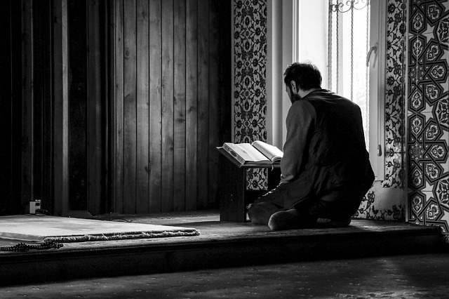
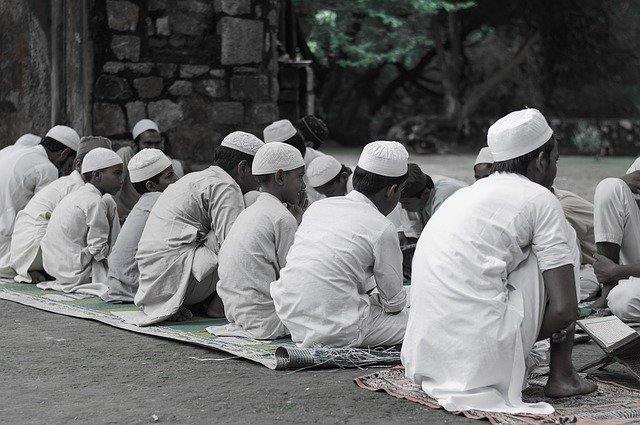
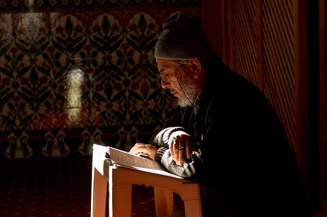
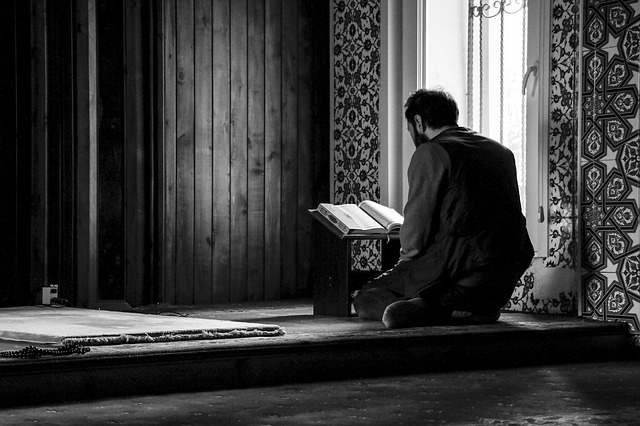
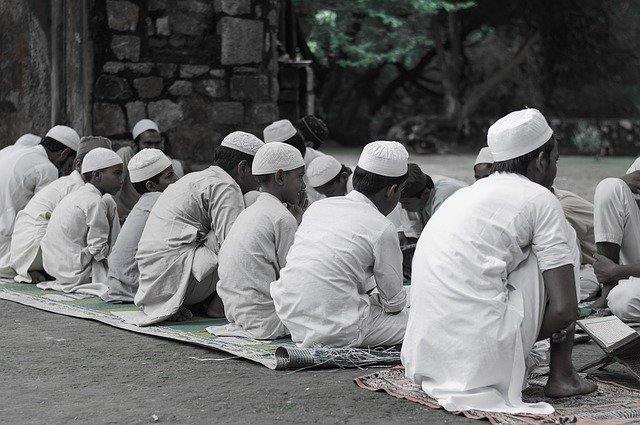
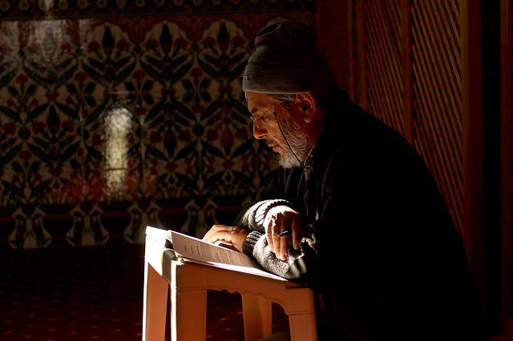

Selamat Datang di Web Resmi Masjid Jami An-Nur
Beribadahlah dengan sekusyuk mungkin
Berita Terkini
Berbagi Takjil
Pada bulan ramadhan ini masjid Jami-An Nur membagikan 1000 takjil kepada masyarakat umum
Komentar :
Malam Idulfitri
Pada malam Idul Fitri Masjid Jami An-Nur mengadakan acara Takbir dan Pawai bersama
Komentar :
Kegiatan Bulan Ramadhan
Pada kegiatan bulan ramadhan tahun ini masjid Jami An-Nur mengadakan kegiatan yang bernama one day one jus
Komentar :
Galeri
Ini adalah hasil dokumentasi di masjid Jami An-Nur
 




